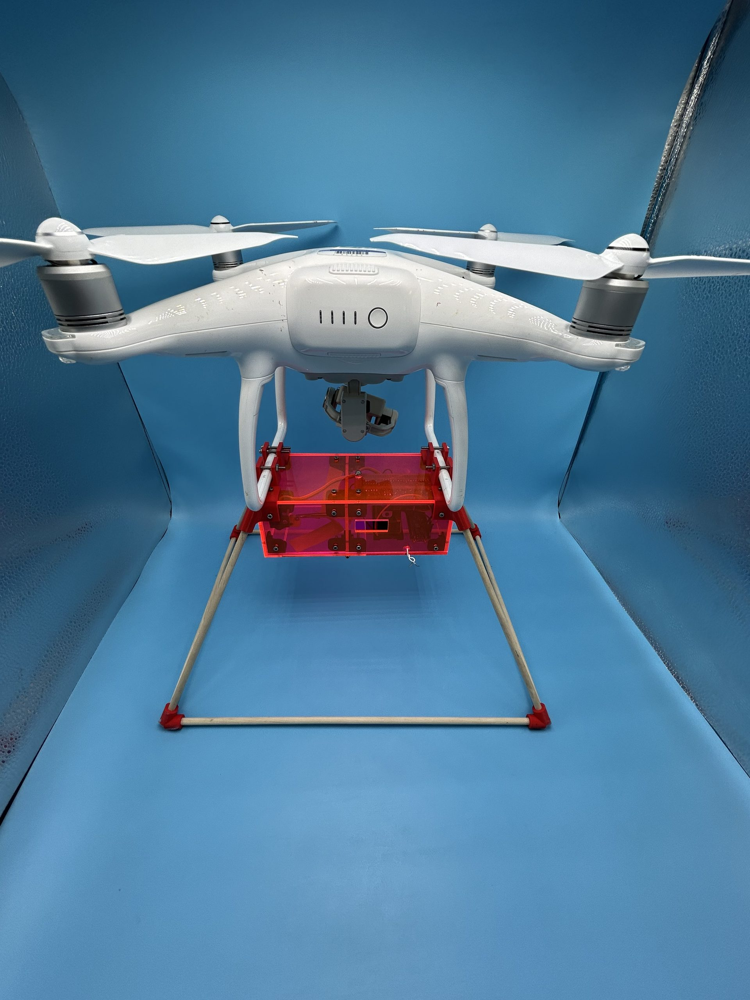
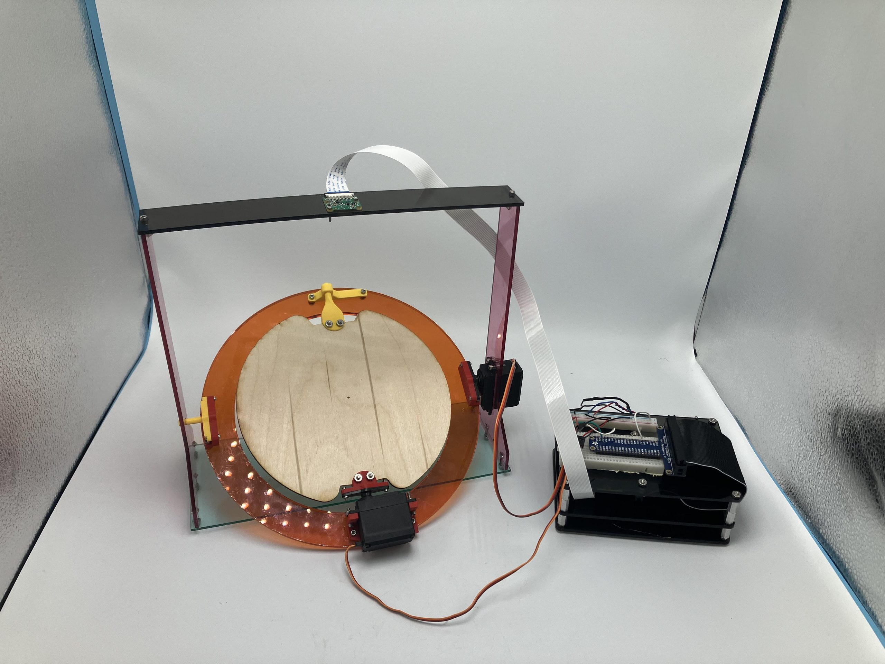
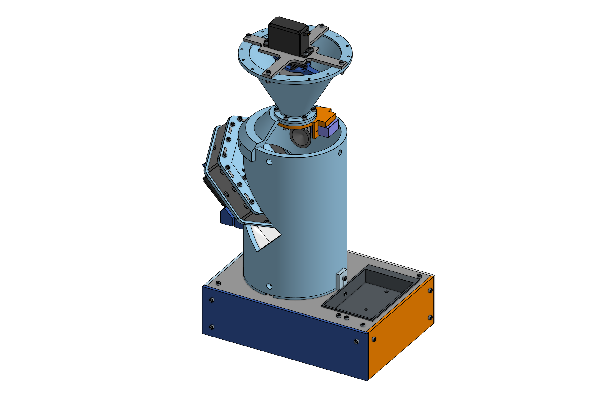
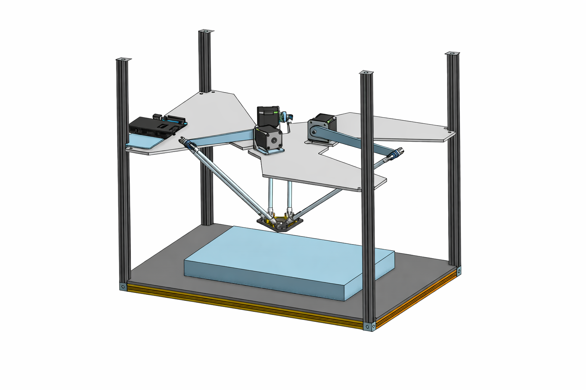

Portfolio
Projects
Engineering builds, software and machine-learning work. Each page is a full write-up with CAD, code, wiring and lessons learned.
Mechanical & electromechanical
04
MISHAP-D: High-Altitude Payload Delivery
Laser-angle ground tracking, real-time drop simulation and a two-person arming interlock for a drone-mounted payload bay.
Read case study →
2-DoF Ball Balancer
Camera-tracked tilting platform on a Raspberry Pi, stabilizing a ball in real time with PID control.
Read case study →
Threaded Items Transfer System
Modular sorter that separates mixed nuts, bolts, lock nuts and washers into organized bins.
Read case study →
Delta Arm
Three-arm parallel robot driven by inverse kinematics on an Arduino, with a post-mortem on actuator torque.
Read case study →Machine learning & signal processing
04-
Connect Four AI Live demo
Convolutional Deep-Q network trained through self-play with shaped rewards for threats, forks and center control.
-
Snake AI Live demo
Deep-Q agent working from an 11-value state, backed by a flood-fill survival check.
-
Scrabble AI Live demo
GADDAG move generator over the tournament word list, full cross-word scoring and a learned move-value network.
-
DFT Bomb Finder Live demo
Discriminates explosions from earthquakes using the frequency content of a seismogram.
Applications
03-
BartendingApp
Android cocktail reference with search, favorites, recipe translation, admin-curated bundles and reviews.
-
Pathfinder Puzzle
Offline sliding-tile puzzle for Android: rearrange numbered tiles to rebuild a winding path.
-
Restaurant Scheduler
Shift-scheduling tool with a Hapi API, JSON data store, fair-scheduling logic and owner controls.